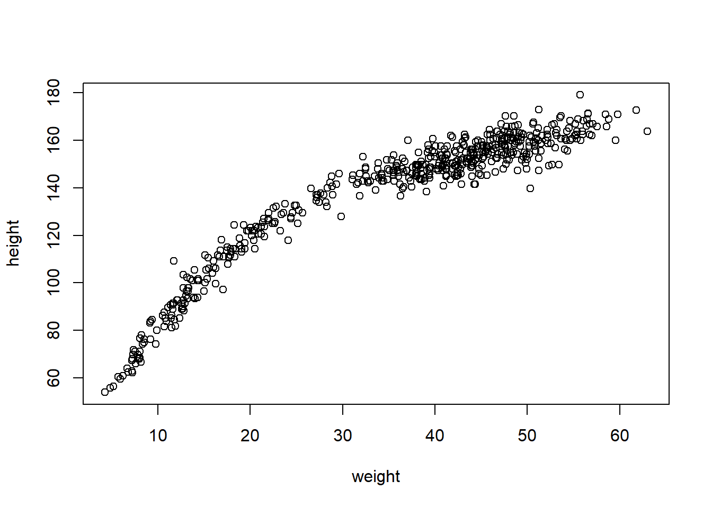
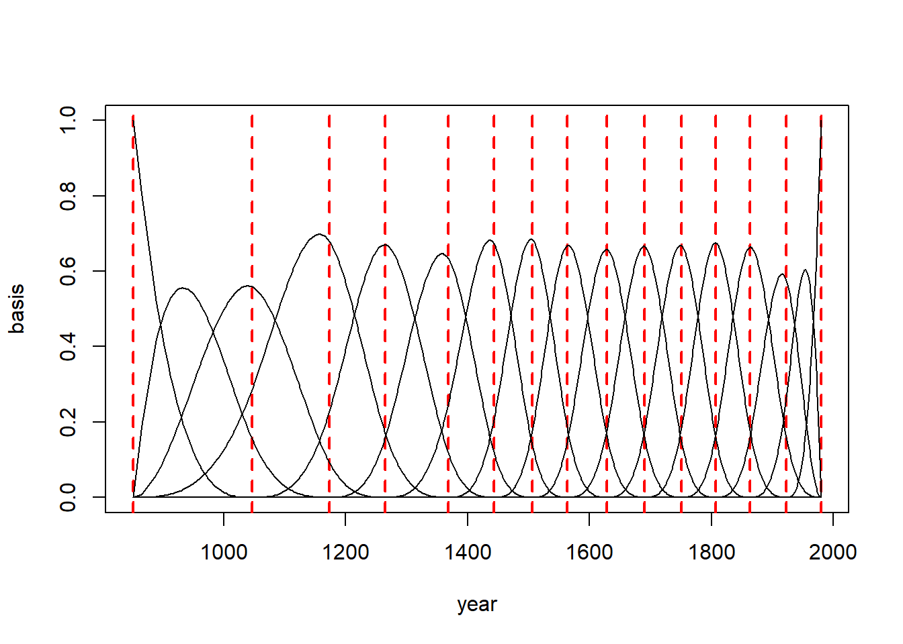

Chapter 12 Curves from lines
We can build models to describe the outcome as a curved function of a predictor using the linear regression. Here are the common methods: 1. Polynomial regression 2. B-Splines
12.1 Polynomial regression
The following data is seen to be followed a curved relationship

We can use the parabolic equation for representing the mean height: \(\mu_i = \alpha + \beta_1 x_i + \beta_2 x_i^2\)
The last parameter \(\beta_2\) measures the curvature of the relationship
Because the polynomial equations involve computing the square or curve of large number, we need to standarize the predictor values in order to avoid the errors in computing estimates. To standarize weight values we do the following:
\[ x_{std.} = \frac{x - \mu_x}{\sigma_x} \]
This unit is called z-score. However, we will use \(x\) instead of \(x_{std.}\) in the following sections.
This is the definition of our model:
\(h_i \sim Normal(\mu_i, \sigma)\)
\(\mu_i = \alpha + \beta_1 x_i + \beta_2 x_i^2\)
\(\alpha \sim Normal(178, 20)\)
\(\beta_1 \sim Log-Normal(0, 1)\)
\(\beta_2 \sim Normal(0, 1)\)
\(\sigma \sim Uniform(0, 50)\)
Note that it is okay to have negative values for \(\beta_2\).
Let’s code that and fit the model to our data:
weight_s <- (d$weight - mean(d$weight)) / sd(d$weight)
weight_s2 <- weight_s ^ 2
m4.5 <- quap(
alist(
height ~ dnorm(mu, sigma),
mu <- a + b1*weight_s + b2*weight_s2,
a ~ dnorm(178, 20),
b1 ~ dlnorm(0, 1),
b2 ~ dnorm(0, 1),
sigma ~ dunif(0, 50)
), data=d
)
precis(m4.5)## mean sd 5.5% 94.5%
## a 146.055966 0.3690246 145.466193 146.645739
## b1 21.733838 0.2889247 21.272081 22.195596
## b2 -7.802658 0.2742178 -8.240911 -7.364405
## sigma 5.775142 0.1765168 5.493034 6.057251Let’s summarize the prediction and plot it:
weight.seq <- seq(from=-2.2, to=2, length.out=30)
pred_dat <- list(weight_s=weight.seq, weight_s2=weight.seq^2)
# compute predictions of mu for pred_dat as input
mu <- link(m4.5, data=pred_dat)
mu.mean <- apply(mu, 2, mean)
mu.PI <- apply(mu, 2, PI, prob=0.89)
# simulate height values
sim.height <- sim(m4.5, data=pred_dat)
height.PI <- apply(sim.height, 2, PI, prob=0.89)
plot(height ~ weight_s, d, col=col.alpha(rangi2, 0.5))
lines(weight.seq, mu.mean)
shade(mu.PI, weight.seq)
shade(height.PI, weight.seq)Remember that we are now working on the full data with both adults and non-adults, and that’s why the relationship is not linear as it was with the adults data.
Let’s try building cubic regression on weight:
\(h_i \sim Normal(\mu_i, \sigma)\)
\(\mu_i = \alpha + \beta_1 x_i + \beta_2 x_i^2 + \beta_3 x_i^3\)
\(\alpha \sim Normal(178, 20)\)
\(\beta_1 \sim Log-Normal(0, 1)\)
\(\beta_2 \sim Normal(0, 1)\)
\(\beta_3 \sim Normal(0, 1)\)
\(\sigma \sim Uniform(0,50)\)
weight_s3 <- weight_s ^ 3
m4.6 <- quap(
alist(
height ~ dnorm(mu, sigma),
mu <- a + b1*weight_s + b2*weight_s2 + b3*weight_s3,
a ~ dnorm(178, 20),
b1 ~ dlnorm(0, 1),
b2 ~ dnorm(0, 1),
b3 ~ dnorm(0, 1),
sigma ~ dunif(0, 50)
), data=d
)
precis(m4.6)## mean sd 5.5% 94.5%
## a 146.394541 0.3099872 145.899122 146.889960
## b1 15.219737 0.4762654 14.458573 15.980901
## b2 -6.202618 0.2571582 -6.613606 -5.791629
## b3 3.583373 0.2287735 3.217749 3.948997
## sigma 4.829890 0.1469427 4.595047 5.064732weight.seq <- seq(from=-2.2, to=2, length.out=30)
pred_dat_m4.6 <- list(weight_s=weight.seq, weight_s2=weight.seq^2, weight_s3=weight.seq^3)
mu <- link(m4.6, data=pred_dat_m4.6)
mu.mean <- apply(mu, 2, mean)
mu.PI <- apply(mu, 2, PI, prob=0.89)
sim.height <- sim(m4.6, pred_dat_m4.6)
height.PI <- apply(sim.height, 2, PI, prob=0.89)
plot(height ~ weight_s, d, col=col.alpha(rangi2, 0.5))
lines(weight.seq, mu.mean)
shade(mu.PI, weight.seq)
shade(height.PI, weight.seq)The cubic model is more flexible than others and that’s why it fits well. However, we stoll have these issues in our model:
- Having a better fit \(\neq\) Having a better model
- All the models we built so far have no biological information. We haven’t learnt any causal relationship so far
The models are good geocentric model = meaning they describe the sample well
Note that the x-axis contains the standardized weight values. To convet back to natural scale, we need to remove the current axis and build the axis explicitly:
12.2 Splines
B-Spline stands for basis spline. It means that we can build wiggly functions from simple less-wiggly bassis components, that are basis functions
We will use data of a 1000 years of blossoms days
## mean sd 5.5% 94.5%
## year 1408.000000 350.8845964 867.77000 1948.23000
## doy 104.540508 6.4070362 94.43000 115.00000
## temp 6.141886 0.6636479 5.15000 7.29470
## temp_upper 7.185151 0.9929206 5.89765 8.90235
## temp_lower 5.098941 0.8503496 3.78765 6.37000The B-Spline model
d2 <- d[complete.cases(d),]
num_knots = 15
knot_list <- quantile(d2$year, probs=seq(0, 1, length.out=num_knots))library(splines)
# create B-spline basis matrix
B <- bs(d2$year,
knots=knot_list[-c(1, num_knots)], # -c(1, num_knots) means exclude the 1st and last element
degree=3,
intercept=TRUE)# Create an empty plot with specified axes
{
plot(NULL, xlim=range(d2$year), ylim=c(0,1), xlab="year", ylab="basis", type="n")
# Plot knots
for (knot in knot_list) {
# Add a vertical line for each knot
abline(v = knot, col = "red", lty = 2, lwd = 2)
}
# Plot each column in the basis matrix against year
for (i in 1:ncol(B)) {
# Add lines for each column
lines(d2$year, B[, i])
}
}
12.3 Building the model with quap
m4.7 <- quap(
alist(
D ~ dnorm(mu, sigma),
mu <- a + B %*% w, # matrix multiplication
a ~ dnorm(100, 10),
w ~ dnorm(0, 1),
sigma ~ dexp(1)
),
data=list(D=d2$doy, B=B),
start=list(w=rep(0, ncol(B)))
)Let’s look at the posterior means:
## 17 vector or matrix parameters hidden. Use depth=2 to show them.## mean sd 5.5% 94.5%
## a 104.705268 0.3330644 104.172966 105.237569
## sigma 6.074996 0.1541797 5.828587 6.321405Let’s plot the posterior predictions:
post <- extract.samples(m4.7)
# find the mean of all weights
w <- apply(post$w, 2, mean)
plot(NULL, xlim=range(d2$year), ylim=c(-4,4),
xlab="year", ylab="basis * weight")
# plot the basis * weight for each column
for (i in 1:ncol(B)) lines(d2$year, w[i]*B[,i])
# plot knots
for (knot in knot_list) {
abline(v = knot, col = "red", lty = 2, lwd = 2)
}